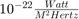

JB2008 Calling Script
The script jb2k8.m is used to call the JB2008 model in MATLAB®.
Contents
Syntax
[outputyear,outputdoy,outputhr,outputmin,outputsec,outputht,outputlat,outputlon,outputsun1,outputsun2,outputtemp1,outputtemp2,outputdensity,outputD1950,outputF10,outputF10B,outputS10,outputS10B,outputXM10,outputXM10B,outputY10,outputY10B,outputDSTDTC] = jb2k8(years,doy,hour,min,sec,ht,lat,lon)
[~,~,~,~,~,~,~,~,~,~,~,~,outputdensity,~,~,~,~,~,~,~,~,~,~] = jb2k8(years,doy,hour,min,sec,ht,lat,lon)
Formatting
The script UpdateFile.m must be included to update input files automatically. Any files that are missing or out of date will be updated automatically.
MATLAB® 2014b is required to use this function.
FileSum = exist('SOLFSMY.TXT') + exist('SOLRESAP.TXT') + ... exist('DSTFILE.TXT') + exist('DTCFILE.TXT');
if verLessThan('matlab', '8.4') == 1 & FileSum == 8 disp(['MATLAB 2014b or later is required to automatically update files.']) disp(['Files may be out of date!']) end
Inputs
- years is the simulation year.
- doy is the simulation day of year.
- hour is the simulation hour.
- min is the simulation minutes.
- sec is the simulation seconds.
- ht is the simulation altitude, in km.
- lat is the simulation latitude, in degrees.
- lon is the simulation longitude, in degrees.
Outputs
Time:
- outputyear is the simulation year.
- outputdoy is the simulation day of year.
- outputhr is the simulation hour.
- outputmin is the simulation minute.
- outputsec is the simulation second.
Location:
- outputht is the altitude, in km.
- outputlat is the latitude, in degrees.
- outputlon is the longitude, in degrees.
Other:
- outputsun1 is the right ascension of the Sun, in radians.
- outputsun2 is the declination of the Sun, in radians.
- outputtemp1 is the exospheric temperature above the input position, in degrees K.
- outputtemp2 is the temperature at the input position, in degrees K.
- outputdensity is the mass density at the input position.
- outputD1950 is the number of days since 1950.
- outputF10 is the 10.7-cm Solar Flux, in .
- outputF10B is the 81-day average of the 10.7-cm Solar Flux, centered on the input time.
- outputS10 is the EUV index (26-34 nm) scaled to F10.
- outputS10B is the 81-day average of the EUV index, centered on the input time.
- outputXM10 is the MG2 index scaled to F10.
- outputXM10B is the 81-day average of the MG2 index, centered on the input time.
- outputY10 is the Solar X-Ray & Lya index scaled to F10.
- outputY10B is the 81-day average of the Solar X-Ray & Lya Index.
- outputDSTDTC is the temperature change computed from Dst index.
More About
Please find the latest version of the code at the JB2008 website.